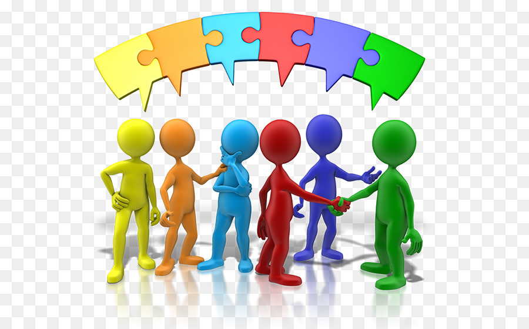
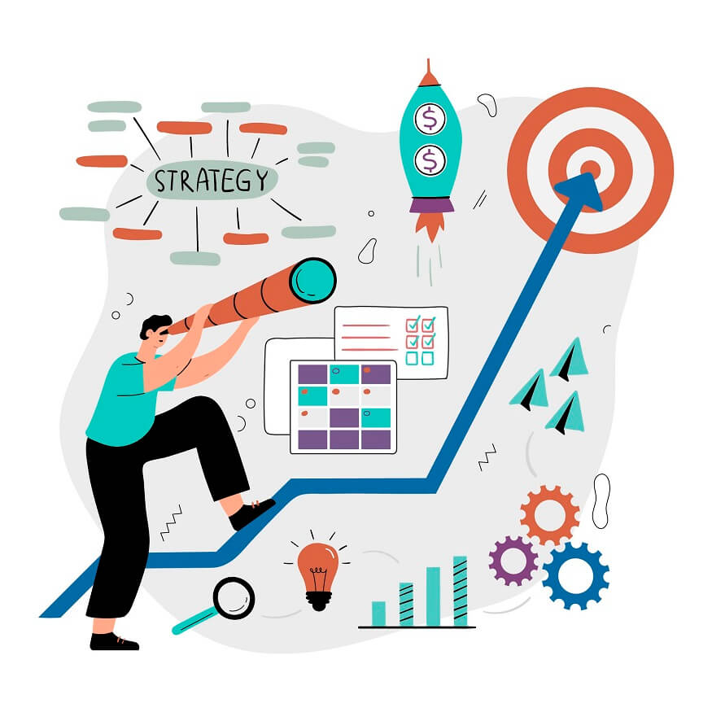
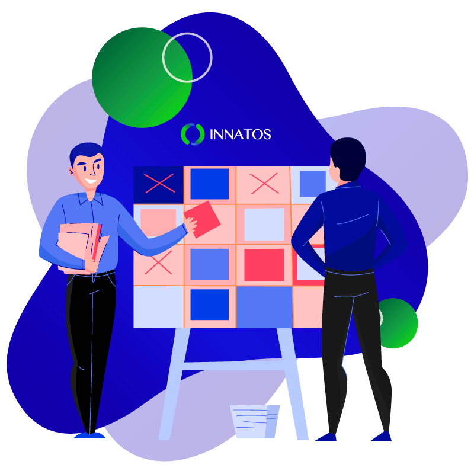
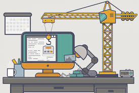

Etapas del desarrollo de software
Comunicación
Antes de cualquier trabajo técnico, se busca entender los objetivos del cliente y los requisitos del sistema. Incluye la colaboración con los interesados para definir qué se necesita construir.

Planeación
Se establece un plan de trabajo: estimación de tiempos, recursos, costos y riesgos. Define el "mapa del viaje" que guiará al equipo durante el desarrollo.

Modelado
Se crean modelos (diagramas, prototipos, bocetos arquitectónicos) para entender mejor los requisitos y el diseño antes de escribir código. Es el equivalente al plano de un arquitecto.

Construcción
Aquí ocurre la magia: el código se escribe, se compila y se integra. Es la fase donde las ideas abstractas se convierten en un producto funcional.

Despliegue
El software se entrega al cliente y se pone en producción. Incluye instalación, configuración y capacitación de usuarios.